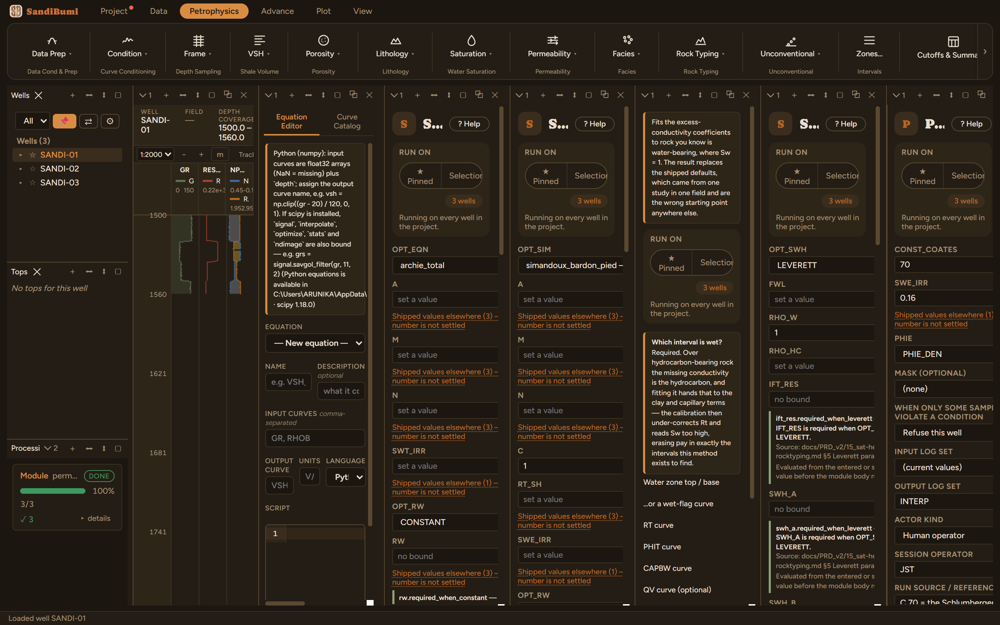
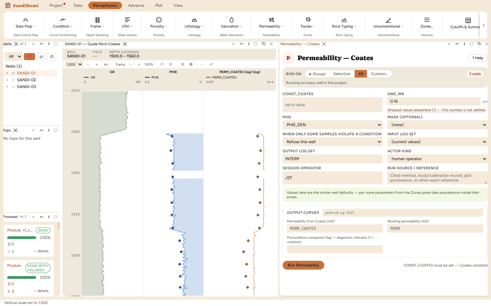
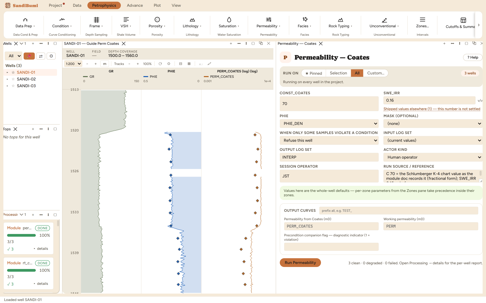

The Coates free-fluid form: porosity squared times the free-to-bound water ratio, squared again. It is the second published-constant estimate on the permeability shelf, and the one whose constant is most often quoted wrongly, because C is scale-dependent and travels between conventions without its units.
PERM = (C · PHIE² · (1 − SWE_IRR) / SWE_IRR)² [mD]
The pane's documentation pins down two things before you type anything. First, this is the Coates and Denoo 1981 producibility form, not the Coates and Dumanoir 1974 model, which replaces both m and n with a common exponent driven by porosity, resistivity at irreducible and hydrocarbon density: a different and much heavier model this module does not implement. Second, C is scale-dependent and published values are not interchangeable: 100 in this fractional form is the same rock as 10 in the percent-porosity NMR Timur-Coates form, and the Schlumberger K-4 chart states 70. Those are unit conventions, not disagreements about rock. A quoted C without its convention is a trap, and the variant below prices it.
C has no default for exactly that reason. With porosity and the irreducible pick entered and the constant left empty:
perm_coates did not run: CONST_COATES is not set for this run. It ships ABSENT - the parameter has no defensible generic default, so the app cannot fill it in. Enter a value in the module pane's 'Coates constant' field.


3 clean. Run live: median PERM_COATES 617.46 mD in the gas sand, 70.94 mD in the wet sand, 94.68 over the section, and a geometric factor of 3.06 high against the 35 depth-matched core plugs.
The convention demonstration: entering C 100 on the same picks lifts the gas-sand median to 1260.13 mD. The ratio is 1260.13 / 617.46 = 2.0408, which is exactly (100/70)², because C enters inside the square. That is what quoting a C from the wrong convention costs: a factor of two on every sample, computed cleanly, plotted plausibly, with nothing on the surface to say so. Restoring C 70 reproduces 617.46 exactly.
SELECT round(median(c.value) FILTER (WHERE sc.gr < 60 AND sc.res_deep >= 10), 2) FROM computed_curves c JOIN standard_curves sc ON c.well_id = sc.well_id AND c.depth = sc.depth WHERE c.curve_name = 'PERM_COATES' AND NOT isnan(c.value)
